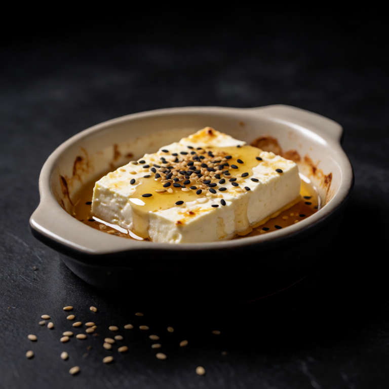

A wheel of camembert baked until molten, served with crisp pear slices.
At a Glance
Prep
5m
Cook
15m
Serves
1
Difficulty
Easy
Rate this slopBe the first to rate it.
Ingredients
Method
- 01
Bake
Preheat oven to 375F/190C. Place the camembert in a small baking dish. Bake for 12-15 minutes until the center is molten.
- 02
Serve
Transfer to a plate. Arrange pear slices, walnuts, and bread around it. Drizzle the cheese with honey.
Slop Notes
Score the top of the camembert with a knife before baking so it is easy to open.
Recipe by foidslop · How we create our recipes
The Weekly Slop
Seven dinners for one, one short note, every Sunday. No life story.
One email every Sunday. Unsubscribe whenever. Double opt-in. See the privacy policy.